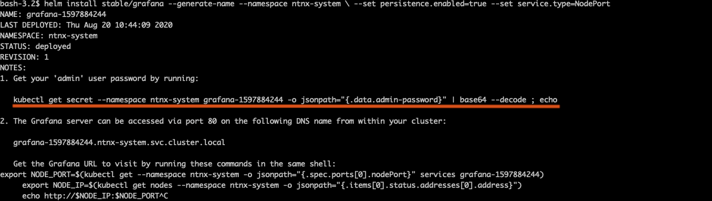
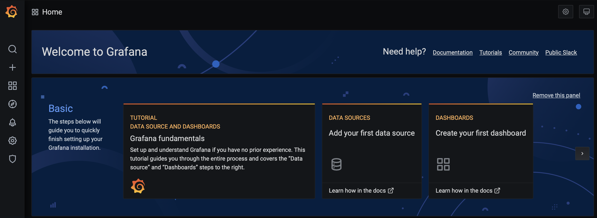
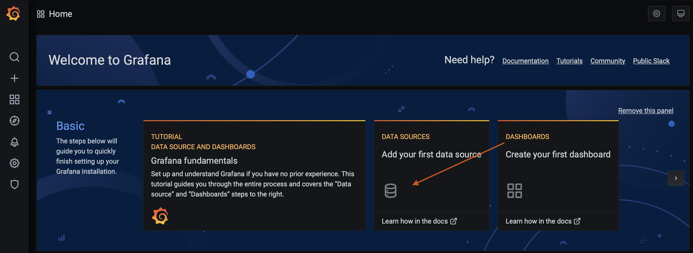
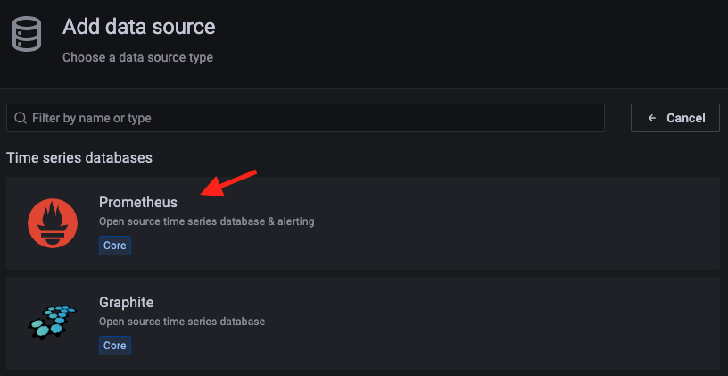
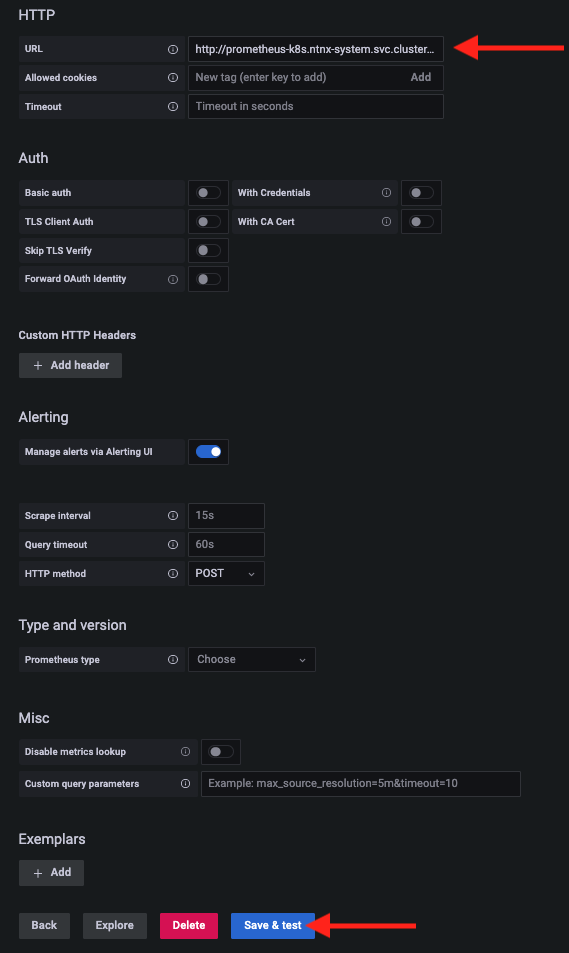
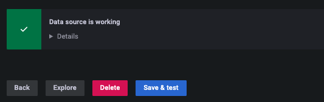

Installing Grafana in Karbon
In this exercise we will install Grafana into the same ntnx-system namespace using Helm.
If you haven't got Helm deployed use these instructions to deploy it in your Linux Tools VM.
Overview
- Connect to Linux Tools VM (if not already connected)
- Install Grafana into
ntnx-systemnamespace
Connect to your Linux Tools VM
-
Logon to your Linux Tools VM console as
rootuser (default password) and open terminal.Info
If you are using your PC/Mac you can also ssh/putty to your Linux Tools VM
Install Grafana
-
Add the helm repos of Grafana
-
We will chech which tool we should add for Grafana from the repo
Output - we can see that we need to use the first toolNAME CHART VERSION APP VERSION DESCRIPTION grafana/grafana 6.44.11 9.3.0 The leading tool for querying and visualizing t... grafana/grafana-agent-operator 0.2.8 0.28.0 A Helm chart for Grafana Agent Operator grafana/enterprise-logs 2.4.2 v1.5.2 Grafana Enterprise Logs grafana/enterprise-logs-simple 1.2.1 v1.4.0 DEPRECATED Grafana Enterprise Logs (Simple Scal... grafana/enterprise-metrics 1.9.0 v1.7.0 DEPRECATED Grafana Enterprise Metrics grafana/fluent-bit 2.3.2 v2.1.0 Uses fluent-bit Loki go plugin for gathering lo... grafana/loki 3.5.0 2.6.1 Helm chart for Grafana Loki in simple, scalable... -
Create a values files to instruct Helm chart to use
defaultservice account and specify other parameters of installcat << EOF > values.yaml serviceAccount: create: false name: default # >> The namespace's default sa will be used to install Grafana persistence: type: pvc enabled: true size: 10Gi # >> Grafana will use this 10 Gi storage service: enabled: true type: NodePort # >> Grafana will be available on a NodePort EOF -
Install Grafana using Helm and using
You will see command output as follows:values.yamlfile
Tip
In case there are issues with downloading the pod from Docker hub, follow the instructions here to set your service account of choice to use a Docker registry secret containing your Docker public hub credentials.
-
Now let's get the password for Grafana implementation using which we can logon to Grafana console
-
Get the Grafana URL to visit by running these commands in the same shell
-
Login to Grafana in a browser using the access URL and password from the previous steps

This completes your Grafana installation.
Configure Grafana
We will now configure the following in Grafana to visualise the health and status of Karbon kubernetes nodes, resources and some applications.
To be able to set up views, we need to do the following:
- Setting up a data source for Grafana - Prometheus in our case
- Test data source for Grafana
Once the data source is configured we will do the following:
- Configure a custom dashboard
- Import a Grafana community configured dashboard
Setting up a Data Source
-
In Grafana UI, click on Data Sources (Add your first data source)

-
Select Prometheus

-
Enter the following in the datasource URL in the URL-field and click on Save and Test

Note
For the datasource URL above; the following are the parts of URL prometheus-k8s - name of your Prometheus service ntnx-system - your namespace svc - your Prometheus service cluster.local - generic DNS name for your kubernetes cluster 9090 - prometheus ClusterIP port
This is the DNS reference of the Prometheus service within your namespace. All services in the namespace are able to resolve by doing a DNS lookup with kube-dns DNS server.
-
You should see a Data source is working message to confirm. If this is not working check for typos in the datasource URL.

We have now configured a datasource for Grafan. Let's move on to configuring dashboards and visualising metrics in the next section.